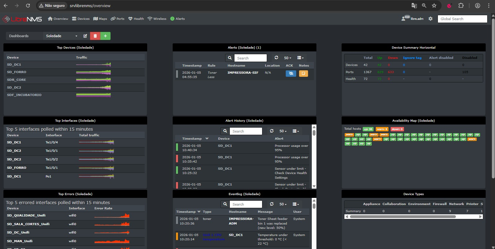

Projetos em Tecnologia
Projeto de monitoramento de infraestrutura de rede utilizando LibreNMS, desenvolvido durante estágio na Vibra Foods. O sistema foi implementado para melhorar a visibilidade e estabilidade da infraestrutura de TI, com foco em prevenção de falhas e otimização.
